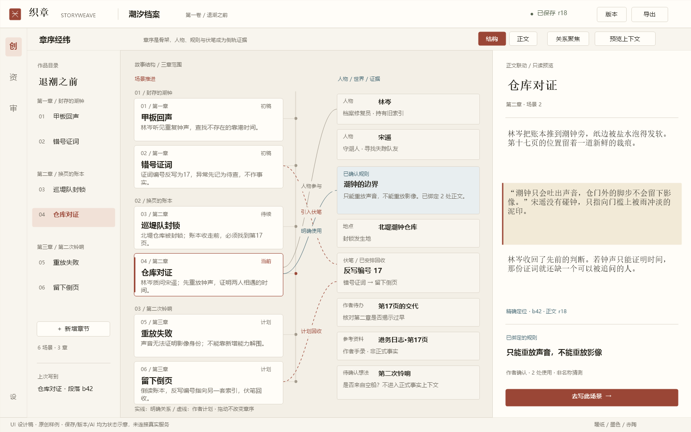
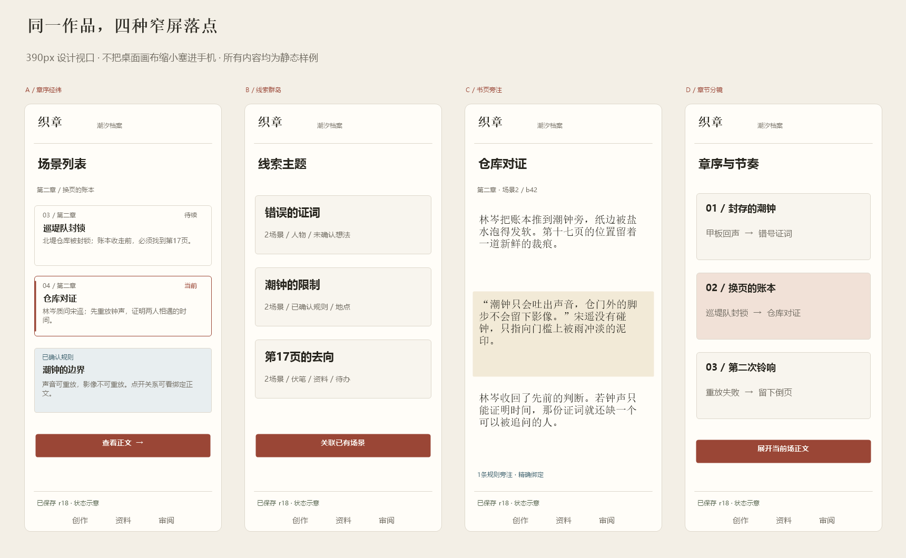
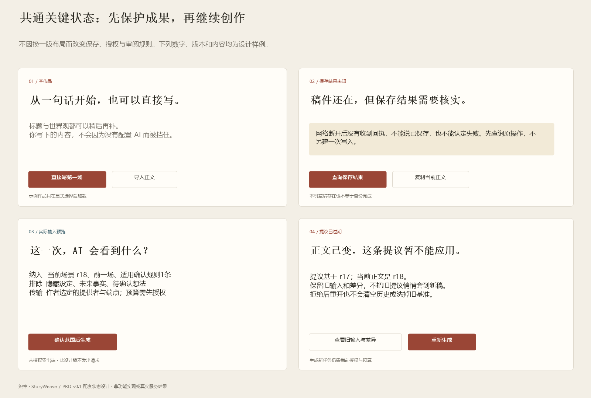

A · 章序经纬
章序成为稳定骨架，人物、规则与伏笔在侧轨支撑当前场景；正文按需在右侧展开。适合持续写长篇与修改影响审阅。

四版总览
差异在结构，不在换颜色。点击缩略图可打开原图。
窄屏不是缩小的桌面
A 回到场景列表，B 回到主题列表，C 保留书页阅读，D 回到纵向章节。主要关系操作有列表与表单替代。

四版共用的关键状态
空作品、保存结果未知、实际输入预览与提议过期，都要能保护作者当前成果。

推荐：A 做结构工作台，吸收 C 的写作舒适度
先看工作方式是否符合你，而不是先选圆角与颜色。A 更直接地把章序、规则和正文连接起来；C 适合作为同一产品的正文视图。B 与 D 保留为明确不同的比较方向，不默认变成首发四套界面。
可以直接反馈“A 的结构，但正文更像 C”“B 太散”“D 更适合我”，无需打开任何子智能体或恢复旧工作流。
查看布局、状态与取舍说明 →